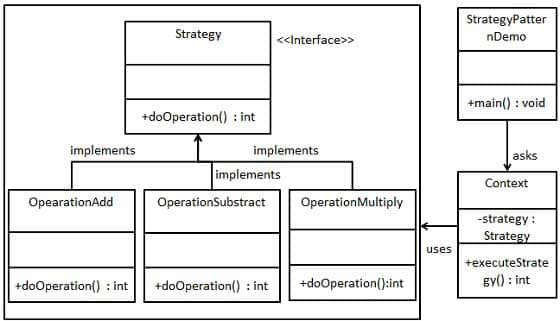

设计模式介绍
设计模式是什么？百度百科这么说的：设计模式（Design pattern）是一套被反复使用、多数人知晓的、经过分类编目的、代码设计经验的总结。使用设计模式是为了可重用代码、让代码更容易被他人理解、保证代码可靠性。
引入问题
如果还不懂，那就先请看下面这一段看上去似乎没有问题的代码。
Animal类
1 | /** |
测试用的Main方法
1 | public static void main(String[] args) { |
以下是上述代码的输出。
鱼在水里游
狗在地上跑
鸟在空中飞
现假设引入一个新的动物——乌龟。它只能在地上爬的份了。Animal类就得这样改
- 枚举类型Type中添加一个枚举TORTOISE
- move 方法中新增else if 判断 Type.TORTOISE
如果你也同样觉得只是改两个地方，so easy！倘若这个类是别人封装在jar包中供你使用的类，现在需要扩展，要求能够描述乌龟的移动动作，那是否又是只有哭的份了？
解决方案
现将上述代码重构如下：
- 抽象出动作接口
1 | /** |
- 抽象出动物类的动作，在动物类的move方法中调用动作接口的move方法
1 | /** |
- 实现动物类的子类，bird
1 | /** |
- 实现bird类的移动动作，fly
1 | /** |
1 | public static void main(String[] args) { |
注意：此处指提供bird类和fly类源码，其余类可以参照这两个类的实现。
也许会觉得在定义这些接口和实现这些类的地方，代码过于繁琐。由刚刚的一个类变成现在的七个类。但是这种设计，却将工程的扩展性大大提高，新增一个乌龟类的爬行动作，只需要新增两个类，不需要在原有代码的基础上再做修改。这就是设计模式的好处
关于策略模式
介绍
策略模式是对动作的包装，是把动作执行者和动作本身分开，委派给不同的执行者管理。策略模式通常吧一个系列的动作包装到一系列的动作类里面，作为一个抽象动作类的子类。
使用场景
- 如果在一个系统中有许多类，它们之间的区别仅在于它们的行为，那么使用策略模式可以动态地让一个对象在许多行为中选择一种行为。
- 一个系统需要动态地在几种算法中选择一种。那么这些算法可以包装到一个个的具体算法类里面，而这些具体算法都是一个抽象算法的子类。换言之，这些具体算法类均有统一的接口，由于多态性原则，客户端可以选择使用任何一个具体算法类，并只持有一个数据类型是抽象算法类的对象。
- 一个系统的算法使用的数据不可以让客户端知道。策略模式可以避免让客户端涉及到不必要接触到的复杂的和只与算法有关的数据。
- 如果一个对象有很多行为，如果使用不恰当的模式，这些行为就只好使用多重的条件选择语句来实现。此时，使用策略模式，把这些行为转移到对应的具体策略类里面，就可以避免使用难以维护的多重条件选择语句，并体现面向对象设计的概念。上述代码举出的例子